01 · Terapija
Soba pod morem
Osoba u invalidskim kolicima sjedi usred sobe, a oko nje pliva karipski greben. Zvuk dolazi iz cijele sobe, kao da je stvarno pod morem. Ništa se ne mora raditi. A kad osoba to poželi, soba odgovara na njezin pokret i glas.
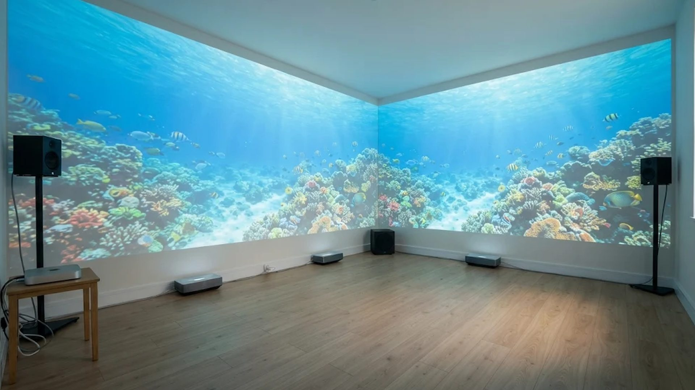
Na podu nema ničega osim ljudi. Uz svaki zid sa stropa visi ultrakratki laserski projektor, a oko sobe osam malih zvučnika Adam Audio D3V, okrenutih naopako. Uz svaki zvučnik je Android mobitel: na ekranu pokazuje što taj zvučnik svira, a kamerom gleda u sobu i zna gdje je osoba. Kad se osoba približi zvučniku, njegov zvuk se mijenja.
Igra pokreta: opuštanje i aktivacija

Moja aplikacija Skeleton na sliku osobe stavlja kostur od točaka i linija. Terapeut odabere pokret, aplikacija ga pokaže kao prozirnu siluetu, a kad ga osoba pogodi i zadrži, dolazi nagrada u slici i zvuku. Težinu određuje terapeut, od vrlo blage do točnije.

Opuštanje
Spori, mali pokreti: ruke se dižu s udahom. Tamna voda i meduze. Nagrada je nježna: kit zapjeva iz kuta sobe.

Aktivacija
Veći pokreti: ruke u zvijezdu, dohvati krug svjetla. Svijetao greben. Nagrada je vesela: jato riba proleti cijelom sobom.
Pjevaj i dobij svoju pjesmu
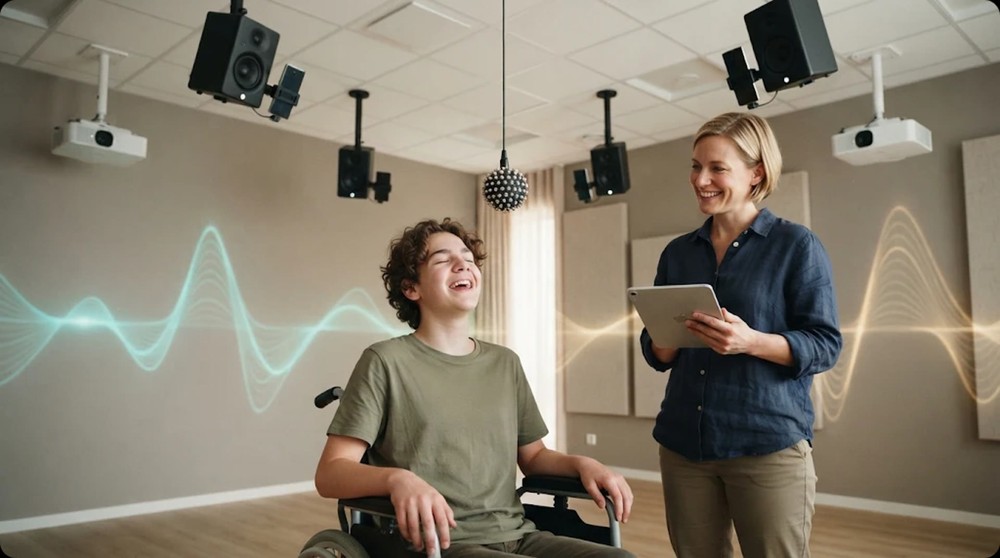
Osoba otpjeva nekoliko taktova u mikrofon, terapeut pritisne gumb, i za minutu iz svih zvučnika dođe cijela pjesma nastala iz te melodije. To radi Suno: besplatni račun daje oko deset pjesama dnevno za osobnu upotrebu. Da pjesmu pjeva baš glas te osobe, treba plaćeni paket i osoba svoj glas mora sama potvrditi. Za djecu uz pristanak roditelja.
Snimanje u 3D
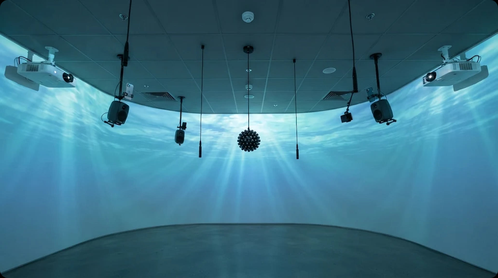
U sredini stropa visi Zylia, jedna kugla s 19 mikrofona. Snima prostor u tri dimenzije, pa se pjesma, bubnjanje u krugu ili glas terapeuta mogu poslije reproducirati na osam zvučnika točno kako su zvučali. Četiri viseća mikrofona snimaju izbliza.
Boja, zvuk i glazba
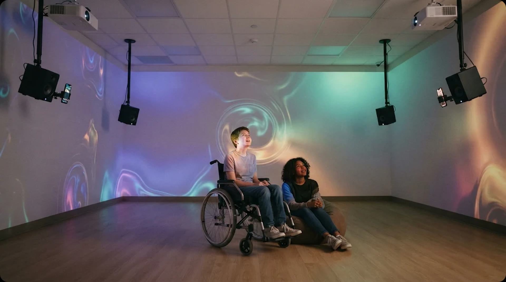
Na zidovima mogu biti i moje MilkDrop vizualizacije: tekuće slike koje nastaju iz glazbe. Za terapiju biram samo spore predloške, bez bljeskova.
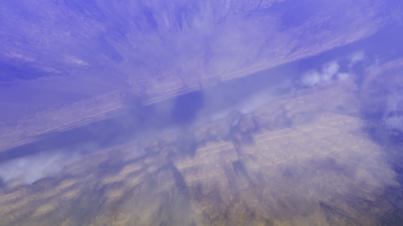

myNoise: zvučni pejzaži
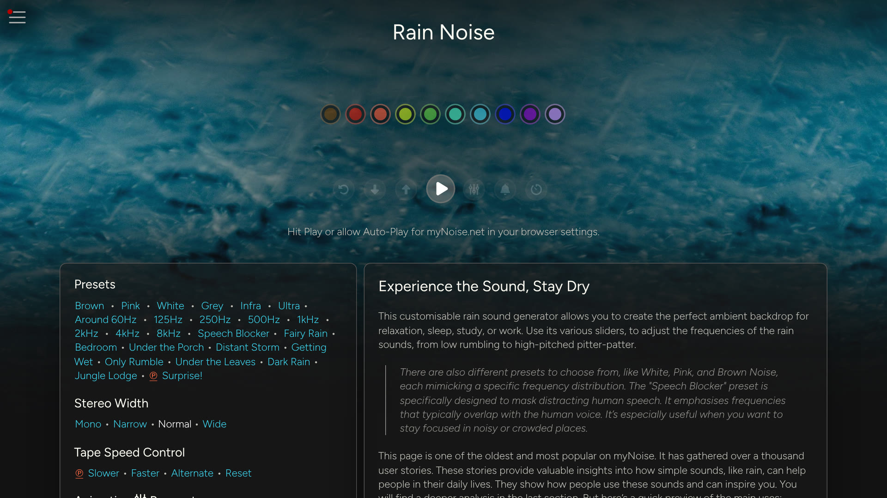
myNoise je internetska stranica i aplikacija sa stotinama zvučnih pejzaža: kiša, more, šuma, vjetar, vatra, zdjele koje pjevaju. Izradio ju je belgijski inženjer zvuka Stéphane Pigeon od vlastitih snimki. Ljudi je koriste za opuštanje, san i usredotočenost.
Posebna je po tome što zvuk nije gotova snimka, nego deset kanala koje sam podešavam, od dubokog tutnjanja do sitnih kapi. Zato je dobra za ovu sobu: svaki kanal mogu poslati na drugi zvučnik, pa su kapi u kutovima, daleka grmljavina na jednoj strani, a dubina mora oko cijele sobe. Zvuk mogu prilagoditi i svakoj osobi, na primjer stišati visoke tonove za dijete osjetljivo na zvuk.
Kiša More Prašuma Vjetar Zdjele koje pjevaju
Za korištenje u terapijskoj sobi myNoise traži godišnju licencu.
DJ Mantra: ambijentalna playlista
Za mirne trenutke složio sam playlistu mekane, ambijentalne glazbe. Počinje s pjesmom Miss You od Trentemøllera, a dalje su Chantress Seba, Nils Frahm, Ólafur Arnalds, Brian Eno i Hania Rani.
02 · Analiza pokreta
Laboratorij pokreta: hod prije i poslije terapije
Isti prostor postaje laboratorij za analizu ljudskog pokreta, bez markera i odijela: dovoljno je ući u krug.
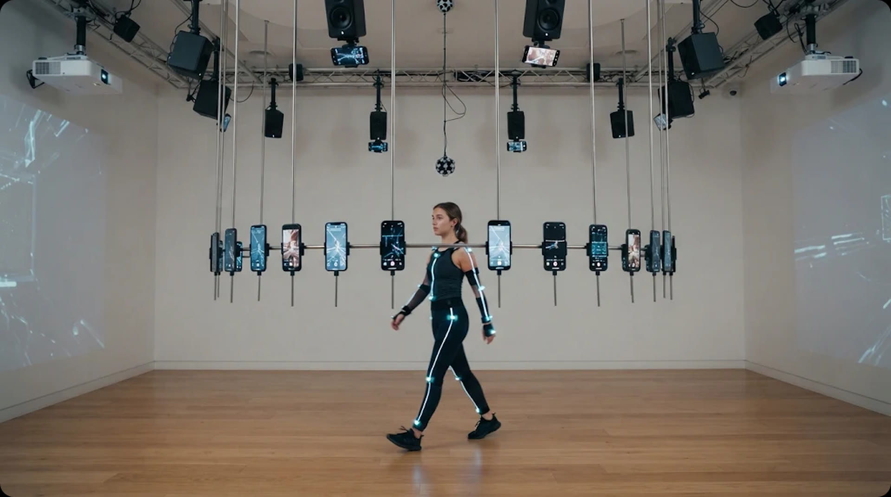
Sa stropa visi prsten promjera tri metra s dvanaest mobitela, svi okrenuti prema sredini. U sredini prstena je 3D mikrofon. Prsten mobitela snima osobu iz svih smjerova, a moja aplikacija Skeleton na svakoj snimci označi zglobove. Iz više kamera nastaje trodimenzionalni kostur koji se može izmjeriti.
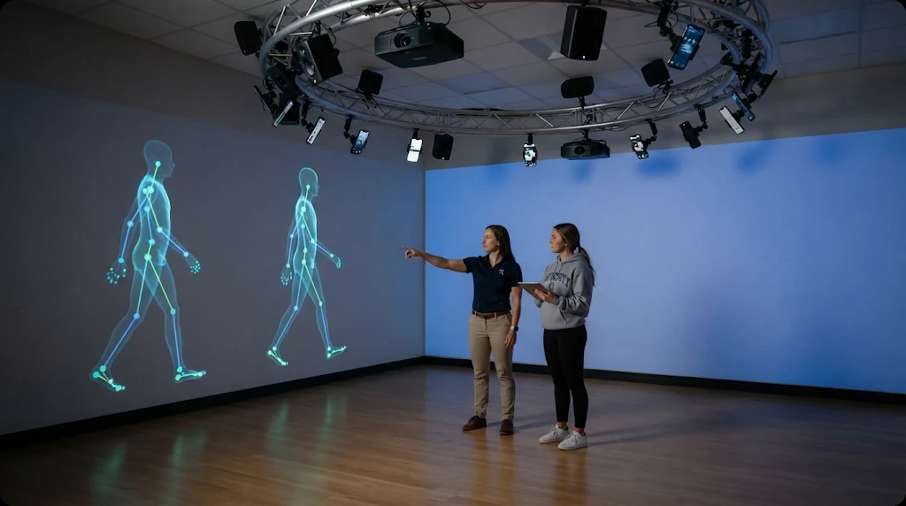
Isti hod snimimo prije i poslije terapije i usporedimo ga na zidu: duljinu koraka, simetriju, ritam, držanje i opseg pokreta u zglobovima. Brojke ne zamjenjuju procjenu terapeuta; daju joj trag koji se može pratiti kroz mjesece.
Hod
Duljina i ritam koraka, simetrija lijeve i desne strane, prije i poslije terapije.
Opseg pokreta
Koliko se ruka diže, koljeno savija ili trup okreće, iz sesije u sesiju.
Ravnoteža
Njihanje tijela u stajanju i pri prijelazima, uz igru na zidu kao motivaciju.
Usporena snimka
Iz dvanaest kamera može se napraviti i "bullet time": pokret zamrznut i obiđen sa svih strana, za nastavu i za samu osobu.
Za 3D zglobove iz više kamera postoji otvoreni alat Pose2Sim. Istraživanja s takvim sustavima (npr. OpenCap, 2023.) pokazuju dobru točnost za ritam koraka i kutove u bočnoj ravnini, a slabiju za rotacije i stopalo, pa je laboratorij alat za praćenje i istraživanje, a ne dijagnostika. Snimke ostaju na računalu u sobi, uz pisani pristanak.
03 · Kad soba miruje
AI laboratorij: govoriš, a soba stvara
Isti zidovi, isti zvučnici, ali bez terapije: radionica u kojoj se glasom stvara aplikacija, glazba, film, 3D svijet ili istraživanje.

Kad nema terapije, sjednem na sofu, pustim tihu glazbu i razgovaram s Claudeom; ono što opišem pojavi se na zidovima. Glazba i spora slika vode u opušteno, budno stanje, kakvo se obično povezuje s alfa i theta ritmom; meni u njemu ideje dolaze lakše. Ruke ostaju slobodne, nema tipkovnice ni miša: samo glas i četiri zida.
- Sjedneš na sofu, svjetlo se priguši, svira tiha glazba.
- Slušaš: AI ti čita tekst ili scenarij naglas, prirodnim glasom.
- Kažeš što ti nije jasno: "Ne razumijem ovaj dio, napravi mi storyboard."
- Gledaš kako se za nekoliko minuta storyboard pojavljuje na zidovima oko tebe.
- Doradiš glasom: "Treći kadar bliže, više svjetla, dodaj glazbu." I opet.

Claude je mozak sobe: piše aplikacije, slaže glazbu u Abletonu, montira u DaVinci Resolveu, modelira i animira u Blenderu, a slike, video i zvuk izrađuje Higgsfield. Sve što se stvori odmah se vidi i čuje u cijeloj sobi.
- Claude Code mozak: razumije, planira, piše
- Ableton Live glazba i prostorni zvuk
- DaVinci Resolve montaža i boja
- Blender 3D i animacija
- Higgsfield slike, video, zvuk u videu
- Speechify čitanje naglas
To nije budućnost, to već radim
Sve svoje aplikacije napravio sam razgovarajući s Claude Codeom. U ovoj sobi takve se stvari rade sjedeći na sofi.
Sedam aplikacija koje sam već napravio glasom
- Blender Control: AI na Mac miniju uređuje otvorenu scenu u Blenderu, radi snimke ekrana i renderira animacije.
- DaVinci Resolve Actions: gumbi i skripte za korekciju boje, izradu timelinea i izvoz u DaVinci Resolveu.
- Ableton Live Actions: spaja miksetu s Abletonom i sam priprema set kad se otvori.
- Vox to Txt: pritisneš F1, govoriš, i riječi se upišu gdje god je kursor.
- Mantra Manual Camera: mobitel postaje profesionalna kamera s ručnim postavkama i NDI izlazom.
- Cloud Mixer: miješa snimke, slike i prijenose uživo u jedan program s natpisima.
- Shruti Box: bordun, rage i akordi te trener glasa koji vodi kroz raspon.
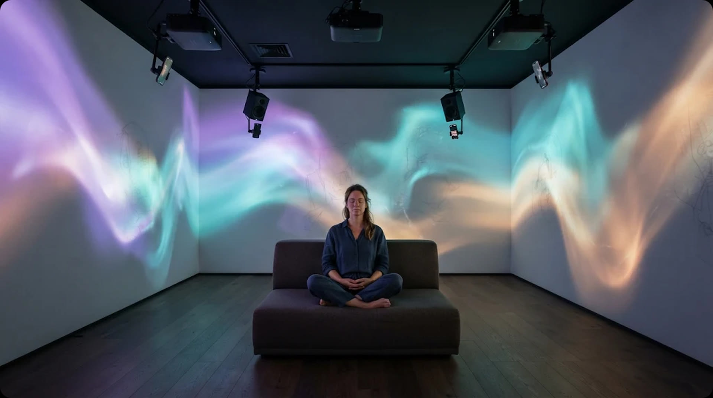
04 · Za fakultet
Što soba daje ERF-u
Osim terapije, soba je mjesto za istraživanje, nastavu, disertacije i eksperimente. Evo što mogu zamisliti za vaše odsjeke.
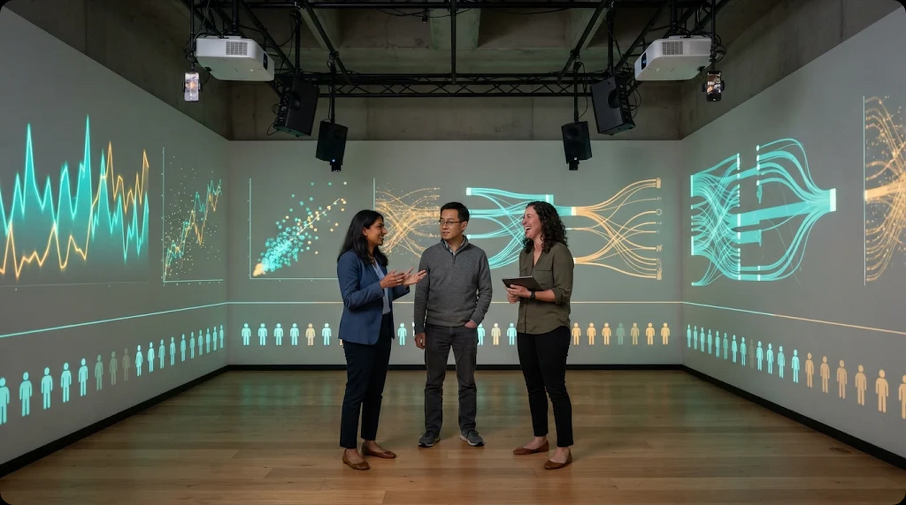
Istraživanje pokreta
Mjerljivi podaci o hodu i pokretu za radove odsjeka.
Primjer: ista skupina djece snimljena na početku i kraju semestra.
Doktorske disertacije
Snimanje, obrada i prikaz podataka glasom, bez programiranja.
Primjer: "Usporedi duljinu koraka za svih dvadeset ispitanika i nacrtaj grafikon."
Studije slučaja
Svaka sesija ostaje zapisana: pokret, zvuk, bilješke terapeuta.
Primjer: pregled napretka jednog korisnika kroz šest mjeseci na zidu.
Usporedba korisnika
Grafikoni koji uspoređuju korisnike, terapije ili skupine.
Primjer: dvije metode terapije, jedna pored druge.
Nastava i praksa
Studenti uče gledati pokret i vode terapiju uz povratnu informaciju.
Primjer: usporena 3D snimka hoda za predavanje.
Skice i eksperimenti
Ideja izgovorena ujutro, aplikacija ili scena isprobana popodne.
Primjer: nova igra za ravnotežu za jednu djevojčicu.
Logopedija
Snimanje glasa i govora te priče i slike složene oko riječi koje dijete vježba.
Primjer: priča s pet riječi s glasom R, s ilustracijama na zidovima.
Autizam i senzorika
Mirna soba prilagođena osjetilnom profilu svakog djeteta.
Primjer: tiše boje i manje zvukova za dijete osjetljivo na podražaje.
Oštećenja vida i sluha
Orijentacija po zvuku iz osam smjerova i velik, kontrastan prikaz.
Primjer: igra "odakle dolazi zvuk" za dijete slabijeg vida.
Istraživanja višeosjetilnih soba još su malobrojna i dokazi su ograničeni (npr. pregled iz 2025.), pa sobu vidim kao mjesto koje stvara nova istraživanja, a ne kao dokazanu terapiju. O svemu odlučuje terapeut, a svaka snimka nastaje uz pisani pristanak.
05 · Aplikacije
Što već postoji
Tri aplikacije koje rade već danas, bez sobe.
Skeleton
Moja aplikacija za Mac: kostur preko slike s jedne ili više kamera, usporedba s ciljanom pozom, glasovne upute i ocjena od 0 do 100. Mobiteli preko USB-a ili Wi-Fija postaju njezine kamere.
MindGarden
Moja besplatna aplikacija za vježbanje uma, napravljena za moju baku: zagonetke, kartice za pamćenje, čitanje sata, nizovi brojeva i igre jezika u kojima šest prijatelja iz šest zemalja zajedno uređuje vrt. Radi bez interneta, na šest jezika, za više korisnika.
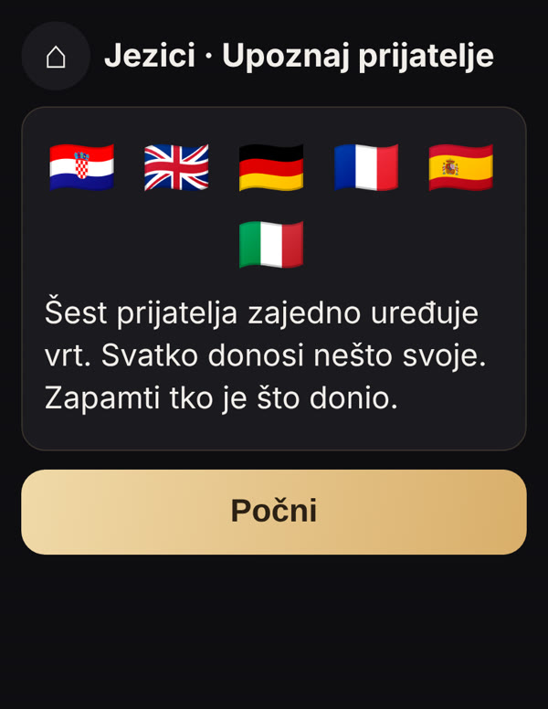
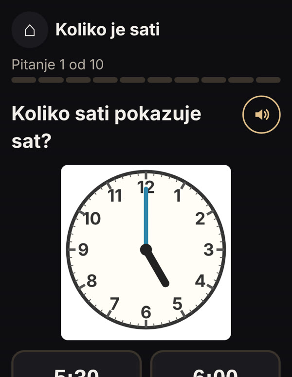

Chakra and Elements Toning
Aplikacija za meditaciju sa zvukovima čakri i elemenata, MilkDrop slikom i krugom daha. Za Android.
06 · Izvedba
Oprema, shema i troškovi
Shema spajanja
Sve vodi jedan Mac mini M6 s 24 GB memorije. USB kabel je dobar samo do pet metara, pa USB do svakog para zvučnika ide kroz zid mrežnim kabelom, do 50 metara. macOS spaja sva četiri para u jednu zvučnu karticu s osam kanala. Mac sam vodi tri projektora, četvrti ide preko DisplayLink adaptera. Mobiteli šalju sliku preko Wi-Fija.
Android ili iPhone?
Preporučujem Android. Na Androidu sam razvijam aplikacije i instaliram ih bez trgovine, a Mac njima upravlja preko USB-a ili Wi-Fija. Skeleton već prima sliku s više Android mobitela odjednom. iPhone ima odličnu kameru, ali je skuplji, aplikacije idu samo kroz Appleovu trgovinu, a Mac ga kao kameru koristi jedan po jedan.
Soba: oprema (13.585,98 €)
| Stavka | Kom. | Cijena | Ukupno | Gdje |
|---|---|---|---|---|
| Apple Mac mini M6, 24 GB memorije, 512 GB SSD cijena iz tiska, provjeriti u konfiguratoru | 1 | 1.489,00 € | 1.489,00 € | apple.com/de |
| Optoma ZH430UST, ultrakratki laserski projektor, Full HD, 4.000 lumena | 4 | 1.398,00 € | 5.592,00 € | beamer-discount.de |
| Optoma OWM3000, stropni nosač za ultrakratki projektor | 4 | 107,73 € | 430,92 € | office-partner.de |
| pro snake AOC HDMI 15 m, optički HDMI kabel do projektora | 4 | 69,00 € | 276,00 € | Thomann |
| DisplayLink USB-C na HDMI adapter za četvrti projektor (OWC Dual HDMI) cijena iz usporedbe cijena | 1 | 97,90 € | 97,90 € | OWC |
| Adam Audio D3V, par aktivnih zvučnika s USB-C ulazom | 4 | 259,00 € | 1.036,00 € | Thomann |
| Adam Audio D3V produžni kabel između zvučnika u paru | 4 | 14,99 € | 59,96 € | Thomann |
| iriz CM550, stropni nosač s navojem 3/8" za zvučnik | 8 | 46,00 € | 368,00 € | Thomann |
| Lindy USB 2.0 preko mrežnog kabela Cat.6, do 50 m (USB kroz zid) | 4 | 129,00 € | 516,00 € | Thomann |
| USB hub s napajanjem, 7 priključaka | 1 | 40,00 € | 40,00 € | procjena |
| Android mobitel s kamerom uz svaki zvučnik (rabljeni Pixel ili sličan) | 8 | 120,00 € | 960,00 € | procjena |
| Godox MTH02, držač mobitela s navojem 1/4" | 8 | 18,00 € | 144,00 € | calumet.de |
| USB punjač za mobitel na stropu | 8 | 10,00 € | 80,00 € | procjena |
| Ubiquiti UniFi U7 Pro, Wi-Fi 7 pristupna točka na stropu cijena iz usporedbe cijena | 1 | 190,00 € | 190,00 € | heise.de |
| Zylia ZM-2, 3D mikrofon s 19 kapsula u jednoj kugli, USB cjenik bez PDV-a, dostupnost na upit | 1 | 1.625,20 € | 1.625,20 € | zylia.co |
| Audio-Technica PRO 45, viseći kondenzatorski mikrofon | 4 | 109,00 € | 436,00 € | Thomann |
| Behringer UMC404HD, USB zvučna kartica s 4 mikrofonska ulaza | 1 | 95,00 € | 95,00 € | Thomann |
| Mrežni kabeli Cat.6 kroz zid, zidne utičnice i spojnice | 1 | 150,00 € | 150,00 € | procjena |
| Ukupno | 13.585,98 € | |||
Laboratorij pokreta: prsten kamera (6.356,28 € + vješanje)
| Stavka | Kom. | Cijena | Ukupno | Gdje |
|---|---|---|---|---|
| Global Truss F34, kružni segment 90°, promjer 3 m (četiri čine prsten) | 4 | 549,00 € | 2.196,00 € | musicstore.de |
| Samsung Galaxy A36, kamera prstena (1080p, 60 sl/s) cijena za 128 GB | 12 | 326,69 € | 3.920,28 € | Bechtle |
| Stezaljka za truss i držač mobitela | 12 | 20,00 € | 240,00 € | procjena |
| Vješanje prstena o strop (sajle, sidra, atest statičara) ponuda izvođača | 1 | na upit | na upit | na upit |
| Ukupno | 6.356,28 € | |||
Softver, jednokratno (479,00 €)
| Stavka | Kom. | Cijena | Ukupno | Gdje |
|---|---|---|---|---|
| Ableton Live 12 Suite (s Max for Live), vodi svih osam zvučnika | 1 | 479,00 € | 479,00 € | Thomann |
| Envelop for Live, IEM Plugin Suite, ZYLIA Studio, Pose2Sim, MilkDrop besplatni alati za prostorni zvuk, 3D zvuk, 3D zglobove i vizualizacije | 1 | 0,00 € | 0,00 € | besplatno |
| Skeleton, moja aplikacija za praćenje pokreta s više kamera | 1 | 0,00 € | 0,00 € | Marko Boško |
| Ukupno | 479,00 € | |||
Pretplate, mjesečno
| Pretplata | Mjesečno | Gdje |
|---|---|---|
| Claude Max (Claude Code), mozak AI laboratorija 200 $ mjesečno + PDV | ≈ 214 € | claude.com |
| Higgsfield Plus, slike, video i zvuk u videu (API po potrošnji) cijena s Higgsfieldovog bloga, plus PDV; API se plaća unaprijed po generiranju | ≈ 49 $ | higgsfield.ai |
| Suno, besplatni račun za svaku osobu oko 10 pjesama dnevno; Pro oko 10 $ za vlastiti glas | 0 € | suno.com |
| myNoise, licenca za korištenje u terapijskoj sobi godišnja licenca, cijenu predlaže korisnik | na upit | mynoise.net |
Prije kupnje
Kod Optome potvrditi da ZH430UST radi okrenut naopako na nosaču OWM3000. Adam D3V ima navoj 3/8" i izravno se navije na stropni nosač; rad naopako proizvođač ne navodi, pa svaki zvučnik dobiva sigurnosnu sajlu. Godox ne radi stropne nosače, pa je umjesto stalka za rasvjetu odabran stropni nosač s istim navojem. Zylia trenutno nema na zalihi u Njemačkoj. Prsten kamera vješa izvođač uz atest statičara. Stavke označene kao procjena nisu provjerene u trgovini. Nisu uključene utičnice na stropu ni ugradnja.
Ukupno jednokratno: 20.421,26 € (soba, prsten i softver), uz oko 260 € mjesečno (Claude Max i Higgsfield). Cijene su od 21.11.2026., s PDV-om osim gdje piše drugačije.
07 · Nadahnuće
Svaram, instrumenti i ljudi
Dok sam živio u Aurovilleu, snimao sam filmove za Svaram, radionicu za zvuk i instrumente. Njihovi prostori su uzor za ovu sobu: instrumenti koje dijete može dotaknuti i osjetiti cijelim tijelom.

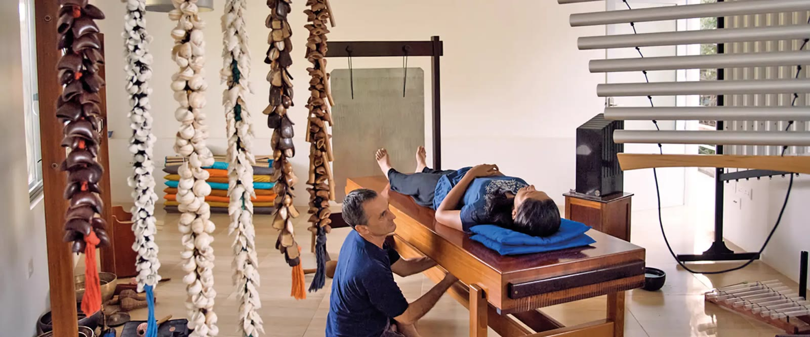
Fotografije: Svaram, Auroville. Filmove sam snimio ja. Više: Auroville Videos by Marko Bosko.
Euphony Trio: kristalna zvona
Kristalna zvona Alana Towera vrte se do sedam minuta, a njihov se zvuk razlijeva cijelom sobom. Svira ih terapeut, ostali slušaju i osjećaju. Cijena na upit.
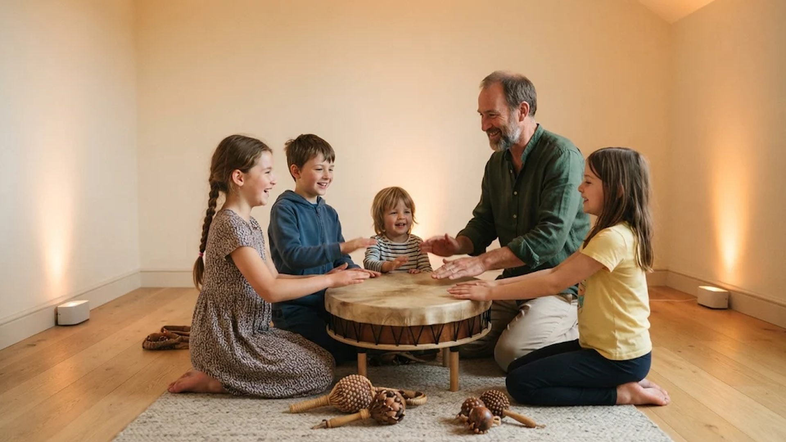
Marko Borić: veliki bubnjevi
Gradi bubnjeve na kojima svira više djece zajedno i vodi radionice izrade šejkera i bubnjeva, u kojima svatko napravi svoj instrument.
Stonewhistle: flaute bez pogrešnog tona
Glinene flaute Hansa Houkesa u kojima svaka kombinacija rupica zvuči skladno. Moj video pokazuje kako se sviraju.
Flaute Stonewhistle s cijenama
Pet tonova i oktava, pa svaka kombinacija rupica zvuči skladno. Svira se jednim sporim, mekim izdahom, tako da gotovo nikakva tehnika nije potrebna.
Mala i lagana glinena flauta nježne ljestvice na kojoj nijedan ton ne zvuči krivo. Lako se drži jednom rukom i svira se tihim dahom.
Mala flauta s tri komore u kojoj svaka kombinacija prstiju daje ugodan troglas, pa je nemoguće pogriješiti. Teška je samo 100 g.
Ista jednostavna Natey flauta, malo dubljeg glasa, bez potrebe za ikakvim predznanjem. Dolazi sa zaštitnom torbicom.
Ista ZEN flauta u većoj izvedbi: niži ton i više mjesta za veće ili manje precizne ruke.
Velika flauta s tri komore, drži se objema rukama. Svaka kombinacija prstiju zvuči lijepo, pa je razumljiva svakome.
Dvije povezane pentatonske komore daju topao stereo zvuk: jedna strana za melodiju, druga za bordun. Ova poveznica vodi na preprodavača OneTone, a ne u Stonewhistleovu trgovinu; cijena je početna i ovisi o tonalitetu.
Flaute se rade po narudžbi, čeka se 3 do 5 mjeseci; za sviranje je potreban dah.
08 · Prijedlog projekta
MIDIPan: igre za prste
Ovo je prijedlog, ne gotova aplikacija. Predlažem igre koje uz pomoć računala vježbaju spretnost prstiju.

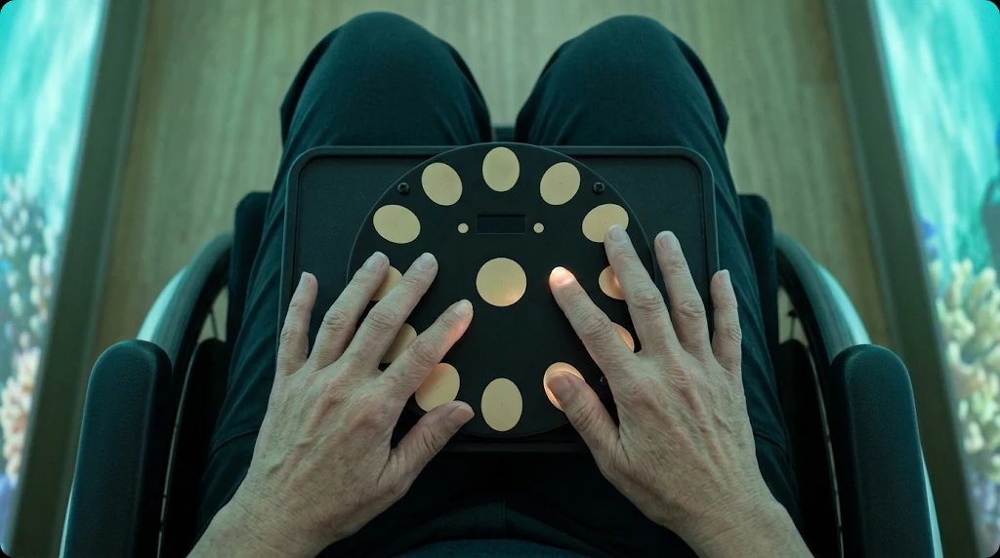
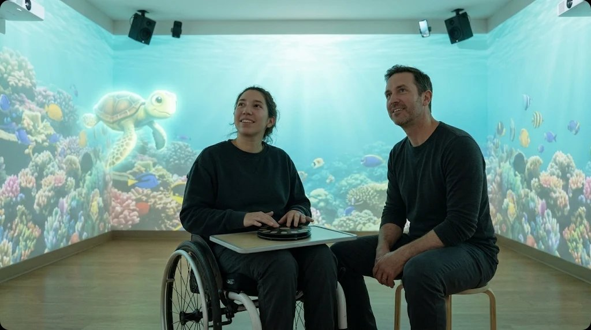
Slike su ilustracija ideje, napravljene umjetnom inteligencijom. To nisu fotografije stvarnih ljudi.
Uređaj koji imam kod kuće
MIDIPan je okrugla ploča osjetljiva na dodir, nalik bubnju handpan. Napravila ga je Shiela Dixon (Etsy trgovina shieladixon). Na slikama oglasa vidi se dvanaest ovalnih polja u krugu i jedno veće okruglo polje u sredini. Šalje MIDI preko USB-a, pa ga računalo može čitati.
Ideja
Osoba dotakne sredinu i igra počinje. Glas kaže na primjer: „dotakni polje 1 kažiprstom”, pa zatim prstenjakom, i tako redom sa svih deset prstiju. Polja svijetle i pokazuju put. Za svaki pravi dodir dolazi nagrada: na projiciranom zidu sobe pojavi se lik, na primjer kornjača. Računalo vodi, a prsti se razgibavaju.
Ne obećavam nikakav rezultat i ne tvrdim ništa medicinsko. Ovo je ideja za razvoj zajedno s ljudima iz struke, za osobe s invaliditetom koje žele vježbati finu motoriku kroz igru.
Ne znam što je vašem fakultetu i vašim korisnicima zapravo potrebno. Recite mi što bi im pomoglo, pa ćemo igru prilagoditi.
O meni
Marko Boško
Dvadeset sedam godina radio sam zvuk i sliku za hrvatske televizije, sedam godina živio sam u Aurovilleu u Indiji, sviram udaraljke, a kao DJ Mantra puštam glazbu za ples. Danas glasom, uz Claude Code, gradim aplikacije za zvuk, sliku i pokret.
Volio bih vam sobu pokazati uživo i čuti što bi vašem odsjeku bilo najkorisnije. Predlažem razgovor od pola sata, na fakultetu ili putem videopoziva.
markobosko.org djmantra.markobosko.org marko.bosko@auroville.community
Slike sobe prikaz su zamišljenog prostora i izrađene su umjetnom inteligencijom. MilkDrop kadrovi su pravi.